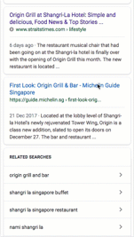

"Google has overtaken Facebook as the top source of external traffic for publishers, according to web analytics firm Parsely"
AsiaOne |
StraitsTimes Food Section |
ZaoBao Entertainment Section |
Publishers are seeing real performance gains from Google AMP
Most AMP views come from Google search results — meaning the user has already expressed a level of interest high enough to type in some search terms, look through options, and pick one.